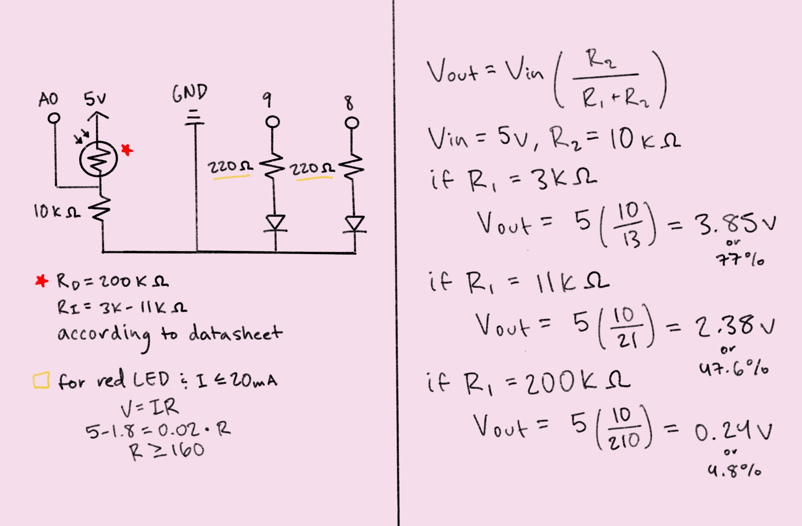

The circuit schematic shows a voltage divider circuit composed of one photoresistor and one
10kΩ resistor. The output voltage of the circuit is measured using analog pin 0. The
schematic also includes two red LED/220Ω resistor pairs. One of the LEDs is connected to PWM
pin 9, which allows it to fade on and off, while the other is connected to digital pin 8. To
the right of the schematic are the calculations used to estimate the range of output
voltages produced by the voltage divider. Using the dark and light resistance values
provided by the datasheet for the photoresistor, I checked that the 10kΩ resistor was
suitable for use with the photoresistor, meaning that it would result in visible differences
in light intensity. For the 220Ω resistors, given 5V of power, a desired current of 20mA or
less, and a voltage drop of 1.8v across a single LED, I calculated that a resistance of 160Ω
or greater would be appropriate. 220Ω resistors were selected only because they were the
most readily available.
The circuit is split into three components: the voltage divider, the fading LED, and the
indicator LED that signals when the voltage divider is reading approximately 5V. As
previously described, the voltage divider is connected to analog pin 0, where its
output voltage is read and used to control the state of the two LEDS.
const int sensorPin = A0; // pin that the sensor is attached to
const int ledPin = 9; // pin that the fading LED is attached to
const int indicatorPin = 8; // pin that the high voltage indicating LED is attached to
// variables:
int sensorValue = 0; // the sensor value
int sensorMin = 1023; // minimum sensor value (10-bit analog-to-digital convertor)
int sensorMax = 0; // maximum sensor value
void setup() {
// initialize digital pin 13 with built-in LED as an output
pinMode(13, OUTPUT);
// turn on the LED to signal the start of the calibration period
digitalWrite(13, HIGH);
// calibrate during the first five seconds
while (millis() < 5000) {
// read the sensor
sensorValue = analogRead(sensorPin);
// record the maximum sensor value
if (sensorValue > sensorMax) {
sensorMax = sensorValue;
}
// record the minimum sensor value
if (sensorValue < sensorMin) {
sensorMin = sensorValue;
}
}
// signal the end of the calibration period
digitalWrite(13, LOW);
// initialize the indicator pin as an output
pinMode(indicatorPin, OUTPUT);
// initialize serial communications
Serial.begin(9600);
}
void loop() {
// read the sensor
sensorValue = analogRead(sensorPin);
// write the sensor value to the serial monitor
Serial.print("sensor value = ");
Serial.print(sensorValue);
// limit the sensor values to the calibrated range
sensorValue = constrain(sensorValue, sensorMin, sensorMax);
// apply the calibration to the sensor reading
sensorValue = map(sensorValue, sensorMin, sensorMax, 0, 255);
// write the adjusted sensor value to the serial monitor
Serial.print(", adjusted value = ");
Serial.println(sensorValue);
// fade the LED using the calibrated value
analogWrite(ledPin, sensorValue);
// turn on the LED if the sensor is reading at approx. 5 volts
if (sensorValue >= 253) {
digitalWrite(indicatorPin, HIGH);
// turn off the LED otherwise
} else {
digitalWrite(indicatorPin, LOW);
}
// wait 2 milliseconds for the analog-to-digital converter to settle
delay(2);
}

The circuit operates by reading the output voltage of the voltage
divider, which varies according to the amount of light received by the
photoresistor. The output value that is read is converted from 10 to 8
bits, by scaling down the range from 0-1023 to 0-255. The duty cycle of
the fading LED is then set to the scaled output value, and the indicator
LED lights up if the value is approximately 5V (253 or greater).
1. According to my calculations below, where I solved for the output
voltage of my circuit when R1 is fixed and R2 is variable and vice
versa, the variable resistor can be either R1 or R2 and does not have to
be one or the other. Although the calculated voltages are not the same,
they still vary between different levels of resistance, and they would
likely result in visible differences in light intensity (if used to
control an LED).
2. In this graph of voltage over time (in seconds) at V-measure of my
voltage divider, I included lines for both the raw sensor values and the
adjusted values after calibration. The max voltage for the sensor line
is ~2.5V because the highest value read using the serial monitor was
469, about half of the input voltage (1023 or 5V). The lowest value was
18, so the min voltage for the sensor line is just above zero. For the
adjusted line, the max voltage goes up to 5V and the min voltage goes
down to 0V due to the use of the map and constrain functions.
3. For an 8-bit PWM and 10-bit analog-to-digital converter, my map()
code would look like:
sensorValue = map(sensorValue, 0, 1023, 0, 255);
If I had a 10-bit PWM and a 16-bit converter, I would scale my code to
look like this:
sensorValue = map(sensorValue, 0, 65535, 0, 1023);
I just have to make sure that I match the min and max values with the
new PWM and converter ranges. If the syntax for the map function is
map(value, fromLow, fromHigh, toLow, toHigh), then fromLow and fromHigh
correspond to the min and max values for the 16-bit converter, and
toLow and toHigh correspond to the min and max values for the 10-bit PWM.